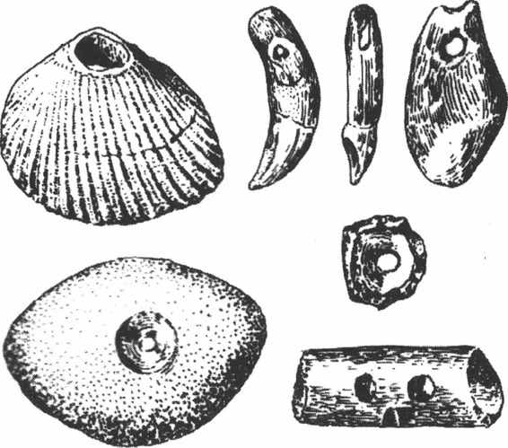
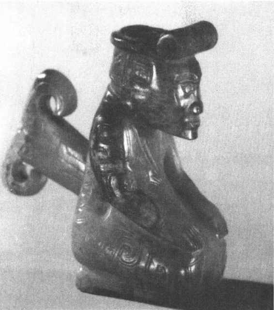
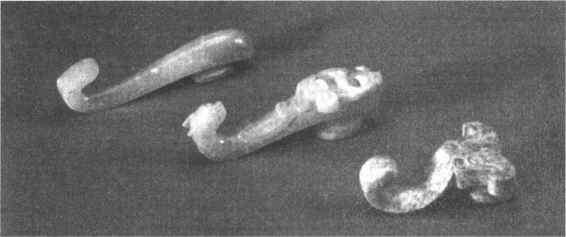
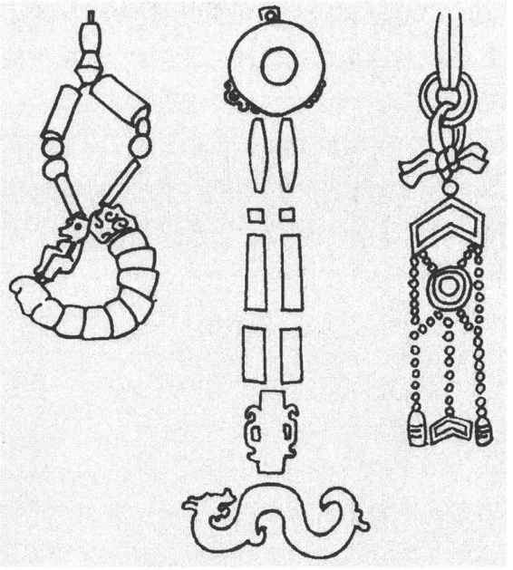
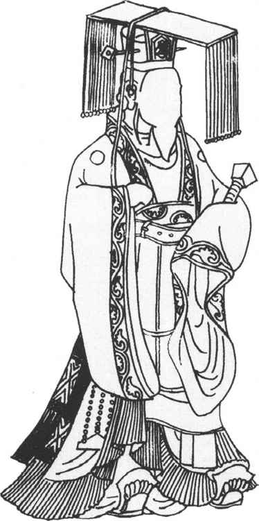

第二十章
历代服装与装饰

第一节
追溯上古时代
至少在汉代，我们的祖先就已经把创造衣服的功绩归于传说中的华夏民族始祖——黄帝。《尚书大传》中说：“黄帝始制冠冕，垂衣裳，上栋下宇，以避风雨，礼文法度，兴事创业。”这样推算起来，在中华大地上，出现衣服的历史最少也要有五六千年了。而从考古发掘得到的古代遗物中可以看到古人装饰自身的做法具有更悠久的历史，这样的人体装饰品与装饰手法在古代曾长期沿用，在古文献中可以见到很多有关的记载。这里，我们首先去回顾一下上古时期人们使用的饰物。
北京西南的周口店拥有著名的中国北京猿人遗址。这里曾发掘出生活在距今四五十万年左右的山顶洞人的大量遗迹，发现了大量人工制造的装饰品，其中有穿孔的兽牙、石珠、石坠、骨管、海蚌壳、鲩鱼眼上的骨片与刻有沟槽的骨管等。（图20—1）有些装饰品大概是经过长期佩戴，孔眼已经磨光变形了。有五件饰物在出土时排列成一个半圆形，可能是一条成串的项链。到了距今六七千年的新石器文化时期，这类装饰品的形状更加规范，更加精致，并且分化成各种不同的种类，如：耳饰、项链、戒指、手镯、头饰等。随着手工业技术的发展，用来制作装饰品的材料也越来越丰富。石料、玉、宝石、蚌壳、贝、象牙、骨、藤、硬木等，都成为制作装饰品的好原料。在考古发现的古代文物中，反映这些装饰品的例子很多。在甘肃省礼泉出土了一些属于仰韶文化的陶人像。他的两只耳朵上都发现了贯通的孔洞，这显然是在模仿当时人们耳朵上有佩戴耳饰用的孔洞。在商、周一些大型墓葬中出土的玉器里，可能有些就是用于作耳饰的。中国古代把用玉做的耳饰叫做珥、瑱等。《说文解字》中解释：“瑱，以玉充耳者。”就是把玉饰直接塞入耳朵上的洞里，它们是一段圆柱形的小玉器。

图20-1 山顶洞人遗址出土的原始人装饰品（蚌壳、兽牙、骨管等等）
在陕西省临潼姜寨仰韶文化遗址的一处少女墓葬中，出土了一套美丽的项饰。它由8721件有孔的骨珠组成，还包括有石珠、石管、兽牙与蚌壳等。浙江省的良渚文化遗址中发现过多种玉石制作的冠饰，花纹精细怪异。它们大约都是当时上层人士戴的饰物，这种冠饰很可能是和羽毛一起组成羽冠。在浙江余杭出土的良渚文化玉器上雕刻有精细的花纹，上面常有一个头戴羽冠的人物像。在云南省元江、沧源等地的岩画上也可以见到头戴羽冠的原始社会人物形象。
发式的产生，是人们在外形装饰方面的一个进步。古代人类可能运用发式来区分各个部落与氏族。在甘肃省秦安大地湾曾经出土过一件彩陶瓶。瓶子的口部做成一个人头的形式，在前额与两鬓留有弧线形的齐眉短发，后面的头发则修剪得与耳垂相齐。（彩图2）可能这就是当时生活在渭水上游这一带的男人发式。以后的《后汉书·西羌传》记载东汉时仍在这一带生活的羌人还是“被发覆面”，与这些古代的发式一脉相传。南方的原始部族有过将头发盘起来的做法。这就是《汉书·陆贾传》中记载的“椎髻”。云南省石寨山出土的古代滇人青铜贮贝器上，有很多人物形象都梳着这种发式。从历史记载中得知，古代生活在四川邛都的夷人、贵州的夜郎人、云南的滇人等都曾经采用这样的发式。根据《史记·吴太伯世家》的记载，古代生活在江南的吴越人习惯“断发文身”，这是他们与中原民族的主要区别。
文身，则是在身体上刻画花纹。这是原始民族中非常普遍的一种习惯。古代文献中记载，吴越人文身，是为了在水中游泳时吓跑龙蛇等水中的敌害。实际上文身可能有实用与美容的多种功能。有人还认为，文身后使皮肤加厚，可以抵御蚊虫叮咬。从这一点看，文身又具有类似衣物的功能了。
我们从现存的先秦古文献，如《诗经》、《左传》、《礼记》等著作中可以看到很多对上古时期服装的记载，更可宝贵的是在近代的考古发现中获得了一大批表现当时服装的文物。
20世纪初，在著名的商代遗址——安阳殷墟，位于侯家庄西北岗的一座商代陵墓中曾经出土一件残缺了一半的白色大理石跪坐人像。它穿了一件窄衣袖、大宽领的短上衣。衣襟向右面交掩。宽宽的领子上装饰了绣花文饰，腰间束有一条绣花宽腰带。下身好像是一条有多重衣褶的裙子。脚上穿的是前端上翘的鞋子。在身体的前面，腰带下还残留有一条有人字形花纹的带子。这可能是一块长方形绣花布料的残存部分。它应该是表现古代系在腰间的重要装饰品——“黼黻”。黼黻在中国古代具有十分崇高的地位，作为贵族的身份标志，成为他们礼服的主要成分。
将这一套服装与古代文献中的记载互相对照，可以确定它就是一套商代的贵族礼服。
20世纪70年代，在殷墟又发掘了商王武丁后妃妇好的墓葬。墓中出土了很多件玉石雕刻的人像。它们向我们提供了更多的商代服装式样。其中有一个跪坐的玉人。他身上穿着绣了云纹与虺蛇纹的长上衣。衣服是对襟、窄袖。下襟可垂到足踝。领口左右交掩。腰间束了一条宽带，下面悬垂着长方形的黼黻。（图20—2）

图20-2 河南安阳商代妇好墓出土的玉人像
更令人惊讶的是这件玉人的发式以及头上的饰物也刻画得精细入微。在头顶的上方，戴有一圈圆箍用以束发。圆箍的前面连接着一个卷筒形的头饰。根据在这个卷筒上面刻出的文饰可以看出它应该是用丝绸制作的。有人认为，这就是在《诗经·小雅· 弁》中写的“有者弁”。是古代贵族礼服中的一种头饰。20世纪80年代，在四川广汉三星堆遗址中出土了大批相当于商代时期的蜀文化遗物。这里有一座青铜立人像，穿着全套庄严的华丽礼服。头上戴有圆箍形的冠帽。冠帽上装饰着突起的冠饰。
弁》中写的“有者弁”。是古代贵族礼服中的一种头饰。20世纪80年代，在四川广汉三星堆遗址中出土了大批相当于商代时期的蜀文化遗物。这里有一座青铜立人像，穿着全套庄严的华丽礼服。头上戴有圆箍形的冠帽。冠帽上装饰着突起的冠饰。
由此证明，在商周时期，已经形成了一套完整的衣服，有衣、裳、鞋、帽以及各种饰物，自然还有与之相配的发式与化妆等。但这也就是上层社会人物可以享用的文明成果。而广大贫民与奴隶则不可能得到如此丰富的衣着。着衣简陋，衣不蔽体乃至赤身裸体等情况，才应该是他们的真实写照。如20世纪30年代在河南省安阳殷墟中出土了一批殷商时代的陶俑。这些陶俑的身上只穿了一种圆领的连衫裙，腰间系着带子。衣着显得十分简陋。
但即使在这样粗劣简单的衣物中，我们也可以看出商周时期男女的衣着已经有了根本性的区别。男子的服装一般分为上下两截，就是上身的“衣”和下身的“裳”。而女子的服装恰恰相反，只是一件完整的长袍。这可能也是出于女子要严密掩盖身体的需要。表现出中国古代的礼仪观念起源是如此之早。
在考古发掘中，商周时期的各种饰物多次大量出土，使我们了解到丰富多彩的商周人体装饰艺术水平。头饰、佩饰等都是可以经常见到的重要饰物。例如梳理头发时使用的饰物大多是一根一头粗钝，一头尖细的长钎子，一般用陶、竹子、骨头、金属以及玉石制作，大致在先秦时期叫做笄，而从汉代起叫做簪。现在我们从属于新石器时期的仰韶文化遗址、龙山文化遗址中已经发现了用陶土烧制的笄与用骨头磨成的笄。大概在这时，中原地区的居民已经将头发盘在头上了。此外，在河南省偃师二里头等夏、商、周代文化遗址中也发现过大量的笄。
腰带虽然不大，却是上古华夏人民衣着中必不可少的一个组成部分。男子用腰带来系紧下裳与蔽膝，女子用腰带来束紧衣衫。到了商周时期，腰带有用丝编织的和用皮革制作的等多种式样。最初，人们用打结的方法来束腰带。后来，产生了专门系带用的带钩。它很快就发展成一种广泛使用的精美工艺品。春秋战国时期，手工业迅速发展，能工巧匠们曾经制作出大量花纹精美、造型奇特的带钩，如水禽形、琵琶形、长牌形、兽面形、匙勺形等等，十分生动逼真。在考古发掘中出土了大量华丽的带钩，反映出古代人衣着的一个侧面。
有些贵族使用腰带时，为了显示自己的高贵，不在腰带上穿孔，而是将皮革腰带的一段装置上一个玉环或者是铜环，然后将带钩的钩首挂在环上。这种用法既美观还可以保护腰带。在河南省汲县山彪镇等地的战国墓中便发现了铜带钩与玉环同出的情况。看来，当时在中原各国都流行着这种使用方法。
带钩不仅用来固定腰带，还可以用来佩挂各种饰物与武器等。用于佩挂的带钩比束带用的带钩要小一些，固定在腰带中，钩颈下垂，平时在上面佩挂的物品有玉饰、印玺、铜镜、刀剑、弓箭等。尤其是妇女使用的带钩，多只用于佩戴饰物，更精细美观。（图20—3）

图20-3 河北满城出土的汉代玉带钩
古代人们非常看重身上的佩饰。不仅用它来美化外表，还用以体现个人的身份、等级与文化修养。最重要的佩饰是各种玉制作的成套饰物。上古人们制作玉饰的工艺水平很高。各种玉饰的形状与用途各有不同。人们在佩戴时把各种形状不一的饰物组合起来，形成美丽的佩饰，叫做杂佩。在河南三门峡虢国墓地与山西曲沃晋国墓地等处，都出土过成串的精美佩饰，复杂而华美。广州西汉初年的南越王墓中，在墓主的尸骨上摆放着成串的大玉石璧，也应该是组成佩饰的。在古文献中见到的玉石佩件名称有：璧，中间有孔，扁平的圆形玉器；环，圆形的玉环；瑗，孔大的璧；玦，开口的圆环；珩，横长的玉块；冲牙，两端尖的玉块；璜，半个圆环等等。（图20—4）

图20-4 古代玉佩饰（左：西周，中：战国，右：隋）
据说在西周时期，“周公制礼”，建立了一套完整的以血缘家族观念为基础的宗法等级礼仪制度。它系统地完善了与贵族等级制度相匹配的服饰制度。历代正史很多都设有《舆服志》的内容，记录了各个朝代对于各级官员及其家属服装的严密规定。这在世界上也是绝无仅有的。随着西周宗法礼仪制度的形成，官方不仅规定了尊卑上下各个等级的不同礼服样式，而且还要求随着各种不同的礼仪活动改换各种不同的服饰。这样就形成了一个完整的官员制服系统。帝王冕服可以说是封建社会制服的代表。我们就先来分析一下它的组成部分。
精美的西周青铜器是西周历史文化的宝贵实证。在一些重要的青铜器上，往往刻写有记录铭文。我们在这些记录中，可以看到周王有时将自己的一些礼服奖赏给立下大功的大臣。例如在陕西省岐山出土的一件《此鼎》上记载：此这个大臣被周王赐予“玄衣、黻屯、赤芾、朱黄、銮旗”，就是黑色的上衣、刺绣上花边的红色黼黻、红带子以及车上用的銮铃、旗子等。另一件《师兑簋》中写道：赏给师兑“赤舄”，即红色的厚底鞋。这些都是只有国王才能使用的礼服用品。赏给大臣，那就是表示给予他们一种特殊的地位。
《左传·桓公二年》记录宋国大夫臧哀伯的话说：“衮、冕、黻、珽、带、裳、幅、舄、衡、、纮、，昭其度也。”这里列举的各种服饰都是周代定型的帝王礼服中具体的装饰成分。
衮，是绘制和刺绣上各种图案的彩色上衣。冕，是帝王戴的顶上有平版的冠帽。黻，就是黼黻，又叫做蔽膝，是在腹部前悬垂的长方形绣花织物。珽，是手执的玉版。带，指用皮革制作或用丝线编织的腰带。裳，是下身穿的长裙。幅，又叫做斜幅或行滕，是缠在腿上的宽布带。舄，是用金色或红色丝线编织的厚底鞋子。衡，是用来固定冠冕的头饰。，是从冕版上垂下来的彩色丝带，下端悬挂着玉石的饰物——缜。纮，是用于系冠的丝绳。，是在冠顶上平覆着的长方形版，宽八寸，长十六寸。
后人画的《历代帝王图》中，皇帝们大多穿着这样一套庄严的礼服。我们可以从上面清晰地了解到它的全部组成。（图20—5）

图20-5 古代帝王的冕服
上古时期的妇女一般不戴冠帽，但是会使用很多头上的饰物。礼仪制度规定女子“十五而笄”，就是说女子到了15岁以后，要把头发盘到头顶上，再用一块黑色的巾帛包裹住头发，在上面插上笄、簪等头饰，进行固定。这类似男子的成丁礼，表示女子从此长大成人，可以出嫁成家了。直至近代，中国一些地方还保留着女子在出嫁时要将头发改梳成盘髻的风俗，叫做“上头”，就是这种古代礼仪的遗绪。
商周时期，贵族已婚女子的头饰比较多，除去各式各样的笄、簪以外，还有一些颇具特色的发型用品，如用假发制作的“副、编、次”等。
“副”是整件的假发。制作它时，用丝线、铁丝等将假发一缕缕地系起来，形成一个半圆形的发套。可以将它衬在女人的头发中，制成各种发型，也可以将它接续在头发的外面，盘成高高的发髻。现在已经发现过汉代的“副”。例如湖南省长沙马王堆汉墓中就曾经出土一件保存完好的“副”。“编”是用假发盘结成的发髻，也可以附加在妇女的头上，形成多种发型。短的假发就只能用来编成小绺的“次”。它用来贴在头的侧面，作为装饰。
即使在小小的女子头饰上，也显出了当时严格的宗法礼仪制度的束缚。《诗经·鄘风·君子偕老》有“副笄六珈”的说法。指当时的公侯夫人们在戴上假发以后，还要插上顶端嵌饰珠玉的发笄。她们的发笄上可以缀有六件玉饰。士大夫们的妻子只能使用有一二件玉饰的笄。而平民百姓就只能使毫无装饰的素笄了。商代妇好墓中出土了四百多件刻饰精美的骨笄，正是这种礼仪等级制度的体现。